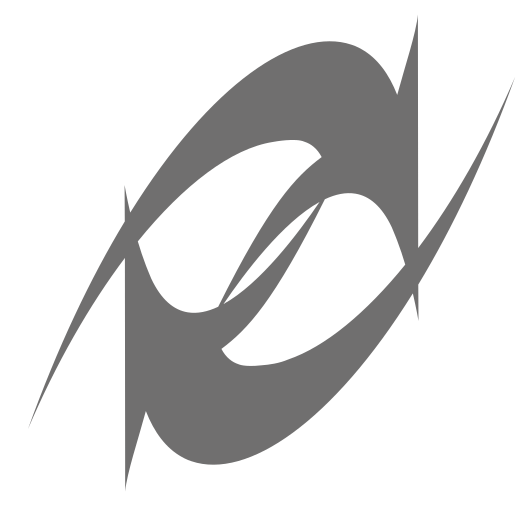
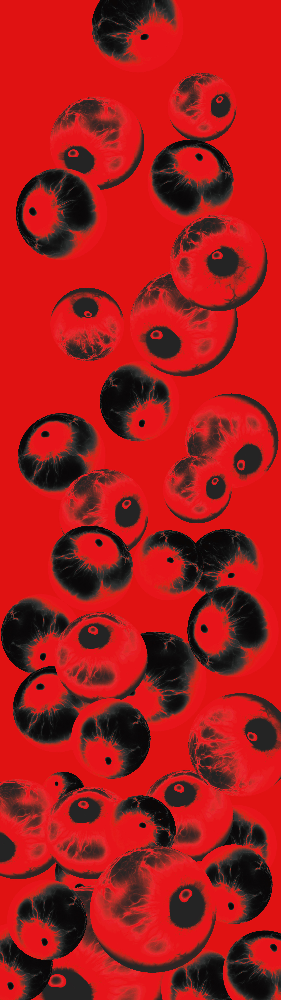

Sound on
開啟聲音
↓↓↓
首頁 Home
商設組 Commercial
動畫組Animation
創設組 Creative life
南臺科技大學
Southern Taiwan University
of Science and Technology
視覺傳達設計系
Department of
Visual Communication Design
113級畢業展
Graduation Exhibition
❮𝗩❯ision
❮𝗩❯agary
❮𝗩❯oice
❮𝗩❯ision
❮𝗩❯ision
❮𝗩❯ision
❮𝗩❯ision
❮𝗩❯ision
❮𝗩❯ision
❮𝗩❯ision
❮𝗩❯ision
❮𝗩❯ision
❮𝗩❯ision
❮𝗩❯ision
❮𝗩❯ision
❮𝗩❯ision
❮𝗩❯oice
❮𝗩❯oice
❮𝗩❯oice
❮𝗩❯oice
❮𝗩❯agary
❮𝗩❯agary
❮𝗩❯agary
❮𝗩❯agary
NICE
TRY

恭喜你成功到達最下面，這個首頁是個對使用者的挑釁，每次往下滑都會越大聲。
Congratulations on making it to the bottom, this homepage is a provocation to the user, each time you scroll down it gets louder and louder.
X
南臺科技大學 視覺傳達設計系 113級畢業展
❮𝗩❯𝗥𝗢𝗢𝗠 𝗩𝗥𝗢𝗢𝗠
❮青春❯設計節 05/16 - 05/19
❮新一代❯設計展 05/24 - 05/27
❮放視❯大賞 05/30 - 06/01
使用電腦、直式手機，才可以正常運行網頁！
Please use a computer or mobile phone to run the website properly!
瀏覽器不支援na
瀏覽器不支援na